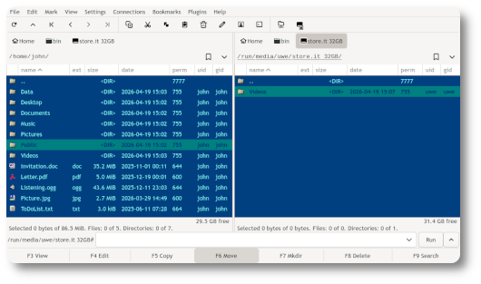

Gnome Commander - ich verabschiede mich
Der Gnome Commander gehört zu den älteren, aber bis heute aktiv gepflegten Dateimanagern unter Linux. Das Programm wurde ursprünglich Anfang der 2000er Jahre entwickelt und orientiert sich an klassischen zweispaltigen Dateimanagern, mit denen sich Dateien besonders schnell verwalten lassen.

Nach den ersten erfolgreichen Jahren wurde das Projekt zunächst von verschiedenen Entwicklern betreut. Ein schwerer Einschnitt folgte 2012 mit dem Tod des damaligen Hauptentwicklers Piotr Eljasiak.
Ab 2013 übernahm ich die Betreuung des Projekts und führte diese Arbeit bis vor kurzem fort. In einer Zeit, in der sich Linux-Desktops und technische Grundlagen stark veränderten, habe ich es irgendwie geschafft, dass Gnome Commander weiterhin auf modernen Linux-Systemen funktionierte und er nicht in Vergessenheit geriet. [1]
Insgesamt gab es unter meiner Leitung ganze 43 (knapp daneben!) Versionen mit Verbesserungen bei Stabilität, Netzwerkfunktionen und Behebung vieler kleiner Bugs: Angefangen bei Version 1.2.18.16 am 23 Dezember 2013 bis zu Version 2.0.0 am 17. Mai 2026. Das führte schließlich auch wieder zu einer besseren Verbreitung in mehreren Linux-Distributionen wie Suse, Ubuntu, Debian, etc.
Schließlich nahmen ab 2022 andere Bereiche in meinem Leben mehr und mehr Zeit in Anspruch. Also machte ich öffentlich auf die notwendige Modernisierung aufmerksam und suchte aktiv nach Unterstützung aus der Open-Source-Gemeinschaft, sowohl über die Projekt-Mailingliste, als auch über die GNOME-Diskussionsplatform discourse.
Diese Bemühungen führten schließlich dazu, dass das Projekt mehr Aufmerksamkeit erhielt und besonders von zwei Entwicklern umfassend modernisiert wurde. Während Andrey Kutejko damit begann, den Gnome Commander auf das moderne GTK4-Framework und teilweise auf die Programmiersprache Rust umzustellen, hat Wladimir Palant ab 2026 eine Unmenge an Bugs behoben, neue Features eingebaut und alte Zöpfe abgeschnitten. All diese Arbeit ist in das letzte Release eingeflossen, welches ich noch betreut habe.
Nach mehr als 13 Jahren als Projektbetreuer habe ich im Mai 2026 nun die Verantwortung zur Projektbetreuung an Wladimir übergeben. Darüber bin ich mehr als froh, denn oft scheitern kleinere Open Source Projekte daran, dass sie einfach einschlafen, weil die Betreuer das Interesse verlieren und sich eben kein Nachfolger findet. Gnome Commander ist daher sehr gut für die Zukunft aufgestellt.
Die Geschichte des GNOME Commander ist damit auch ein Beispiel dafür, wie freie Software über Jahrzehnte hinweg durch ehrenamtliches Engagement am Leben gehalten wird - oft ohne große Aufmerksamkeit, aber mit viel Ausdauer und Leidenschaft.
Homepage des Gnome Commander